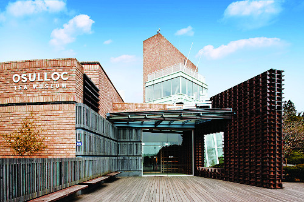

장소 제보하기
오셜록 티뮤지엄
제주특별자치도 서귀포시 안덕면
like
25

주소
오후 6시에 영업종료
전화번호
오후 6시에 영업종료
업종
오후 6시에 영업종료
가격정보
오후 6시에 영업종료
주차
오후 6시에 영업종료
사진으로 다시 봐도 너무 좋은 해비치 밀리우 ㅠㅠ 최고의 다이닝이었어요! 박무현 셰프님이 계실때 먹었었는데.. 음식도 분위기도 서비스도..!! 사진이 많은데 일일이 설명 달며 그때의 감동을 재현하구 싶네요.. 정말 최고!